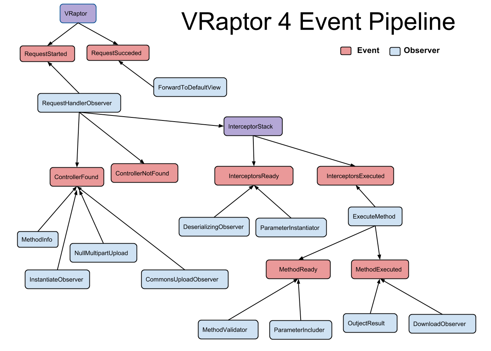

Trabalhando com o recurso de Eventos do CDI
O VRaptor agora trata o fluxo principal do request utilizando eventos do CDI. A seguinte imagem exibe os eventos disparados e seus respectivos observers:

Eventos disparados pelo VRaptor
-
VRaptorInitializeddisparado no startup da aplicação, indicando que o VRaptor foi inicializado. -
RequestStarteddisparado no início de cada request. -
RequestSucceededdisparado no final do request, apenas caso ela tenha sido processada sem nenhum erro. -
ControllerFoundeControllerNotFoundvão indicar se o Controller que atende a url do request foi encontrado ou não. -
InterceptorsReadyeInterceptorsExecutedindicam o momento em que a stack de interceptors será executada e logo após sua conclusão. -
MethodReadyeMethodExecutedquando o método do controller será executado e logo após sua conclusão.
Observando nossos eventos
Você pode observar qualquer evento disparado pelo VRaptor, para isso basta criar um método com a anotação @Observes do pacote javax.enterprise.event antes do evento como parâmetro. Algo como:
import javax.enterprise.event.Observes;
import br.com.caelum.vraptor.events.ControllerNotFound;
public class MeuObserver {
public void metodo(@Observes ControllerNotFound evento) {
// alguma ação para quando o controller não for encontrado
}
}É importante lembrar que não existe ordem na execução dos observers, ou seja, não há garantia que o meu método será executado antes ou depois de qualquer outro método que observe este mesmo evento. Caso a ordem seja importante, considere utilizar interceptors.
Mais sobre eventos
Esse interessante recurso te ajuda a diminuir o acoplamento de seu código de forma elegante. Você pode ler mais a respeito dos eventos do CDI em sua especificação e também nesse post do blog da caelum.